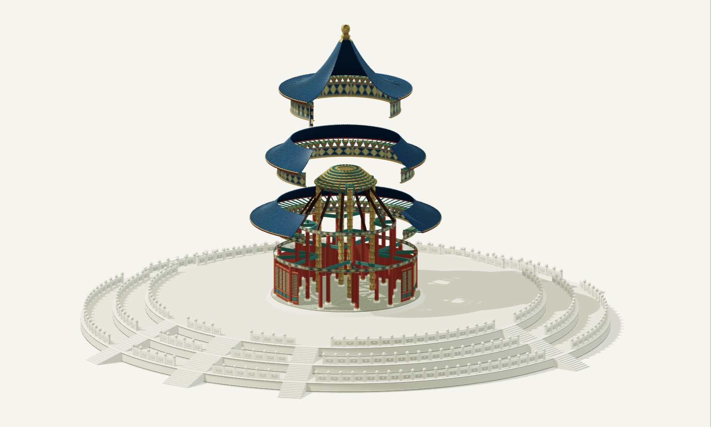
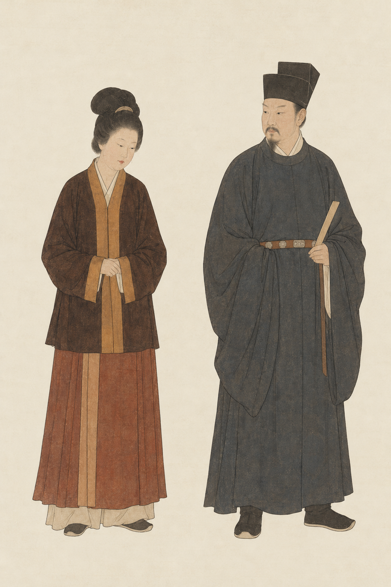

PERSONAL COLLECTION / 个人收藏
把好奇，
留在这里。一些网页，和一些小小的探索。
从衣冠、星空到古建筑，
点开任意一个作品，慢慢看。
已收藏的网页01 — 03

建筑 · 图解祈年殿 · 建筑图谱
旋转、剖开，读懂三重屋盖下的空间。
打开网页 ↗
服饰 · 长卷衣章 · 中国衣冠风雅录
沿着长卷，看不同时代的衣冠与生活。
封面为 AI 视觉转译。
 星图 · 交互
星图 · 交互敦煌星图 · 众星拱极
走进唐代星图，探寻紫微宫的星官。
打开网页 ↗